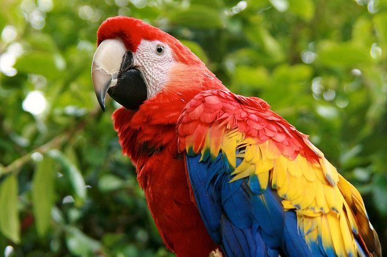
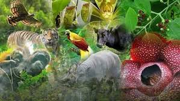
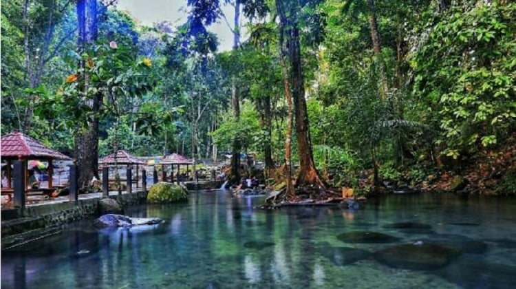

Seberapa penting hutan bagi keberlangsungan hidup?
Penyebaran hutan yang ada di seluruh bumi tentu bukan tanpa alasan. Keberadaan hutan ternyata membawa dampak yang positif baik bagi manusia atau pun lingkungan dan makhluk hidup lainnya. Fungsi utama dari hutan yang ditumbuhi berbagai jenis tanaman lebat ialah untuk menyerap karbon dioksida yang ditimbulkan oleh manusia, kendaraan bermotor, limbah pabrik maupun sumber-sumber lainnya. Adapun beberapa manfaat hutan bagi keberlangsungan hidup manusia dan lingkungan.
- sebagai paru-paru dunia
- Menjaga dan Mempertahankan Kesuburan Tanah
- Sebagai Sarana Tempat Tinggal Makhluk Hidup
- Menjadi Sumber Keanekaragaman Hayati
- Kawasan Lindung dan Pariwisata
Hutan merupakan wilayah yang luas dan ditumbuhi oleh berbagai jenis tumbuhan sehingga memiliki daya serap karbon dioksida yang tinggi. Hutan sendiri juga merupakan pemasok oksigen paling besar di permukaan bumi. Tentunya oksigen yang dihasilkan oleh hutan akan sangat bermanfaat bagi manusia dan hewan untuk bernafas. Tidak heran kalau hutan mendapat julukan sebagai paru-paru dunia.
.jpeg)
Fungsi dari hutan bukan hanya untuk memasok oksigen, akan tetapi seluruh tumbuh-tumbuhan yang ada di dalamnya juga turut berperan dalam menyuburkan tanah. Lewat daun-daun yang berguguran kemudian membusuk dan terurai di atas permukaan, hutan sudah menunjukkan eksistensinya dalam menjaga dan mempertahankan kesuburan tanah. Jika tanah subur, maka kita dapat mengolahnya menjadi lahan penanaman pohon kembali.

Jutaan manusia dan hewan terdeteksi memilih hunian di dalam hutan. Maka dari itu, apabila hutan rusak atau pun hilang, maka otomatis manusia dan hewan pun kehilangan rumahnya. Hutan sebagai sarana tempat tinggal makhluk hidup merupakan salah satu fungsi yang terus dijaga kelestariannya.
Berbagai macam tumbuhan dan tanaman yang berkembang biak di hutan menjadi sumber keanekaragaman hayati yang bermanfaat bagi manusia. Entah dimanfaatkan sebagai sumber makanan atau sumber obat-obatan, tumbuhan pada hutan harus terus dilestarikan agar tidak punah hingga masa yang akan datang.
Melindungi aneka hewan dan tumbuhan langka menjadi salah satu fungsi hutan. Selain itu, hutan juga bermanfaat sebagai objek penelitian. Indonesia memiliki kawasan hutan wisata yang dipelihara khusus untuk kepentingan pariwisata. Di hutan wisata, Grameds bisa melihat keindahan alam, kekayaan flora, dan fauna untuk kepentingan rekreasi.
